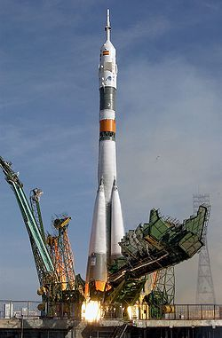

19 августа 1960 года в 11:44 по московскому времени со стартового комплекса № 1 (45°55′00″ с. ш. 63°20′00″ в. д.HGЯO) был осуществлён успешный запуск второго космического корабля-спутника. Кабину, в которой находились Белка и Стрелка, поместили в корабль за два часа до старта. Подготовкой корабля к запуску руководил лично Сергей Павлович Королёв. Во время старта и набора высоты у собак наблюдались сильно учащённые дыхание и пульс, но когда корабль был выведен на орбиту, они успокоились.
Система жизнеобеспечения, установленная в кабине корабля-спутника, полностью обеспечивала нормальную жизнедеятельность животных. Давление, температура и влажность воздуха в кабине корабля обеспечивались системами жизнедеятельности в пределах установленной нормы. Периодически проводилась очистка воздуха. Автоматы кормления обеспечивали пищей и водой Белку и Стрелку два раза в сутки, в рамках эксперимента по возможности приёма пищи в невесомости. Регистрацию физиологических функций в течение всего полёта обеспечивал специально разработанный комплект медицинской исследовательской аппаратуры. Установка для регенерации воздуха содержала специальное регенерационное вещество, которое поглощало углекислоту и водяной пар и выделяло при этом необходимое количество кислорода. Запас регенерационного вещества обеспечивал потребности животных в кислороде в течение продолжительного времени.
Наблюдение за состоянием и поведением собак впервые велось с помощью телевизионной системы. Видеоинформация, передававшаяся с борта корабля во время прохождения корабля-спутника в зоне действия наземных приёмных пунктов, регистрировалась на киноплёнку. В дальнейшем при просмотре этой плёнки можно было определить, как вело себя животное в определённый момент и какие физиологические изменения в этот период происходили. Кроме того, информация, накопленная во время нахождения корабля вне зоны видимости наземных служб, передавалась на Землю позднее. В полёте регистрировались частота пульса, дыхания, артериальное давление (в сонных артериях), электрокардиограммы, фонокардиограммы (тоны сердца), двигательная активность животных и температура тела. Координация движения животных изучалась с помощью телевидения и контактно-реостатных датчиков, воспринимавших движения животных и передававших о них по телеметрии. Медицинская информация с борта корабля-спутника передавалась на наземные радиотелеметрические системы. Врачи-физиологи обрабатывали полученные данные и специальным кодом передавали их в центр управления полётом. Информация обрабатывалась с помощью ЭВМ. После стресса, вызванного взлётом, Белка и Стрелка вели себя спокойно, вначале даже немного вяло. Несмотря на перегрузки и вибрацию вначале, собаки с аппетитом ели свою специализированную пищу. Состояние невесомости не оказывало существенного воздействия на систему кровообращения. Температура тел собак не изменялась в течение всего полёта. Однако после четвёртого витка вокруг Земли Белка почему-то стала крайне беспокойна, пыталась вырваться из привязных ремней и лаяла. Её стало тошнить. Несмотря на это, послеполётные анализы не выявили у Белки особых отклонений от нормы. Через несколько часов после старта выяснилось, что на корабле отказал датчик инфракрасной вертикали, поэтому для предпосадочной ориентации была использована резервная солнечная система.
Наблюдение за состоянием и поведением собак впервые велось с помощью телевизионной системы. Видеоинформация, передававшаяся с борта корабля во время прохождения корабля-спутника в зоне действия наземных приёмных пунктов, регистрировалась на киноплёнку. В дальнейшем при просмотре этой плёнки можно было определить, как вело себя животное в определённый момент и какие физиологические изменения в этот период происходили. Кроме того, информация, накопленная во время нахождения корабля вне зоны видимости наземных служб, передавалась на Землю позднее. В полёте регистрировались частота пульса, дыхания, артериальное давление (в сонных артериях), электрокардиограммы, фонокардиограммы (тоны сердца), двигательная активность животных и температура тела. Координация движения животных изучалась с помощью телевидения и контактно-реостатных датчиков, воспринимавших движения животных и передававших о них по телеметрии. Медицинская информация с борта корабля-спутника передавалась на наземные радиотелеметрические системы. Врачи-физиологи обрабатывали полученные данные и специальным кодом передавали их в центр управления полётом. Информация обрабатывалась с помощью ЭВМ. После стресса, вызванного взлётом, Белка и Стрелка вели себя спокойно, вначале даже немного вяло. Несмотря на перегрузки и вибрацию вначале, собаки с аппетитом ели свою специализированную пищу. Состояние невесомости не оказывало существенного воздействия на систему кровообращения. Температура тел собак не изменялась в течение всего полёта. Однако после четвёртого витка вокруг Земли Белка почему-то стала крайне беспокойна, пыталась вырваться из привязных ремней и лаяла. Её стало тошнить. Несмотря на это, послеполётные анализы не выявили у Белки особых отклонений от нормы. Через несколько часов после старта выяснилось, что на корабле отказал датчик инфракрасной вертикали, поэтому для предпосадочной ориентации была использована резервная солнечная система.
